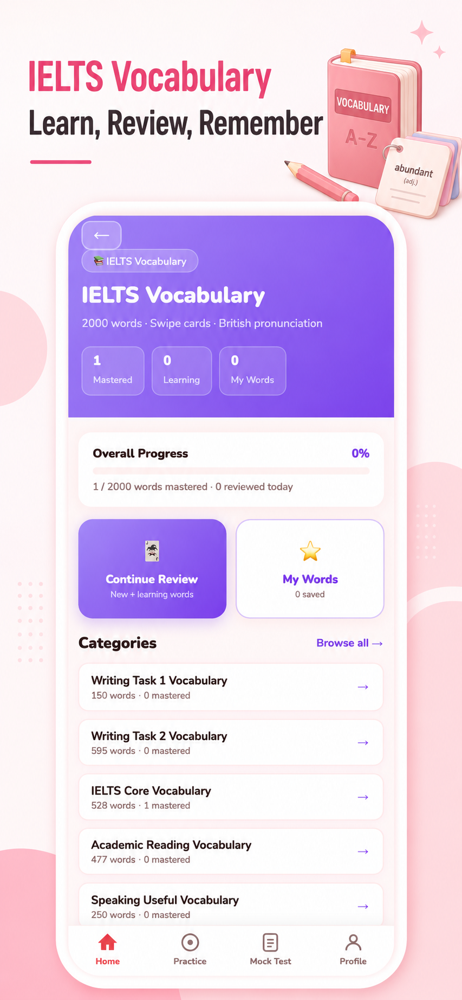
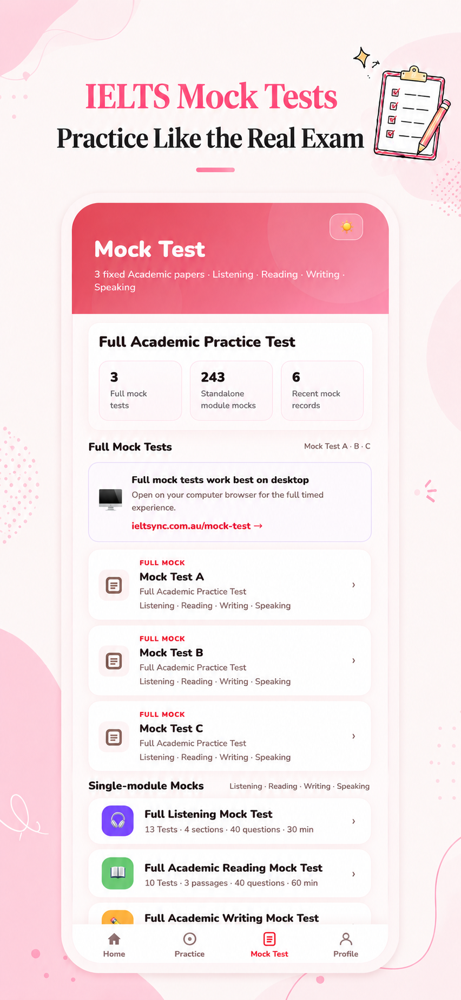

Four-skill coverage
Dedicated experiences for listening, reading, writing and speaking, supported by question lists and study materials.
Product Story · EdTech · 2026
A bilingual IELTS Academic study product connecting practice, learning resources, professional scoring references and mock tests across all four language skills.




Product direction
IELTS learners move between long-form writing, recorded speaking, timed reading and audio-led listening. IELTSync gives each skill its own appropriate practice flow while keeping navigation, access and progress behaviour consistent.
The bilingual interface also reduces friction for learners who benefit from Chinese explanations while preparing to perform in English.
Key experience
Dedicated experiences for listening, reading, writing and speaking, supported by question lists and study materials.
Writing and speaking flows connect attempts with structured learning feedback and sample-answer support.
Module and full mock tests help learners shift from individual practice into longer exam-style sessions.
Reflection
The design challenge was to make the product feel like one coherent app without pretending every IELTS skill works the same way. A shared visual system provides continuity, while task-specific controls preserve the character of each exam activity.
The current product is an independent preparation tool and does not claim affiliation with the official IELTS organisations.
Next project
TruePathway→